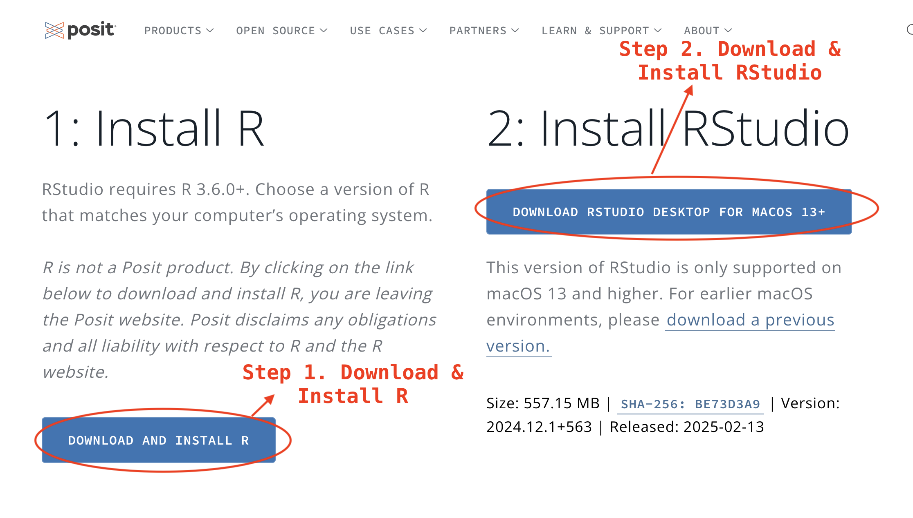
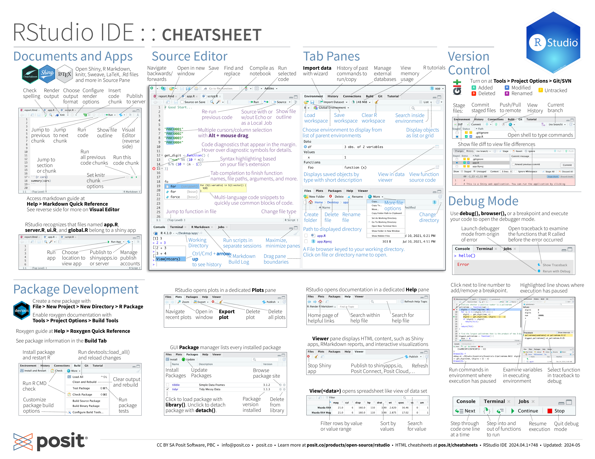
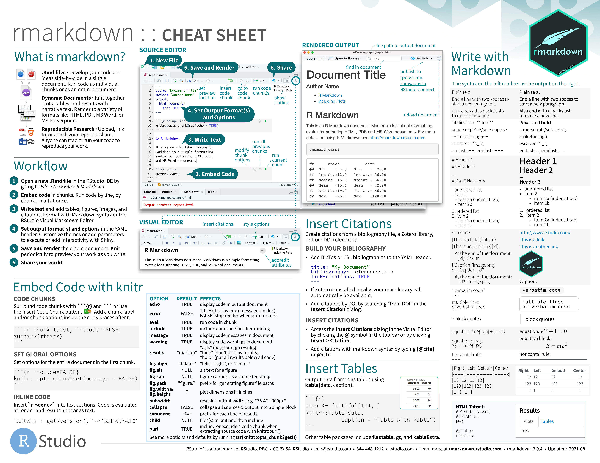

1 Intro to R and RStudio
1.1 Why Learn R for Data Journalism?
Data journalism requires tools that combine statistical rigor with storytelling capabilities. R provides:
- Reproducible analysis through script-based workflows
- Advanced visualization for impactful storytelling
- Open-source community with continuous innovation
- Professional-grade tools used by NYT, BBC, and Reuters etc.
1.2 Installing the Tools
Step 1: Install R
- Visit CRAN Mirror
- Select your operating system (Windows/Mac/Linux)
- Download the latest version (≥4.3.0 recommended)
- Run the installer with default settings
Step 2: Install RStudio
- Go to posit.co/download
- Choose Download RStudio Desktop
- Install using default options
Important
Installation Order Matters! Always install R before RStudio - the IDE needs the base R engine to function.
1.3 First-Time Setup
Organizing Your Workspace
Create a project folder:
- Windows:
C:/Users/[YourName]/Documents/djr - Mac:
/Users/[YourName]/Documents/djr
- Windows:
Use lowercase letters only (avoid spaces/special characters)
# Create folder from R Console (alternative method)
dir.create("~/Documents/djr")Configuring RStudio
Optimize your setup through:
- Tools > Global Options > General
- Uncheck everything above the “Other” panel
- Set “Save workspace” to Never
- Tools > Global Options > Code
- Enable “Soft-wrap R source files”
- Check “Use native pipe operator |>”
1.4 Understanding the RStudio Interface
| Position | Panel | Purpose | Key Features |
|---|---|---|---|
| Top-Left | Source | Code editing | Scripts, R Markdown, notebooks |
| Bottom-Left | Console | Direct code execution | Immediate feedback, debugging |
| Top-Right | Environment | Active data objects | Variable inspection |
| Bottom-Right | Files/Help | Navigation & documentation | Package help, file browsing |

Download full RStudio IDE cheatsheets
1.5 Essential Packages Installation
Run this in the Console:
install.packages(c(
"tidyverse", # Data wrangling & visualization
"rmarkdown", # Dynamic reporting
"quarto", # Modern publishing
"knitr", # Document processing
"janitor" # Data cleaning
))1.6 Your First Project
Create an R Project
- File > New Project > New Directory
- Name:
firstname-week1(e.g.,bin-week1) - Browse to your
djrfolder - Click Create Project
Create R Markdown File
- File > New File > R Markdown
- Title: “My First R Markdown”
- Author: Your name
- Default HTML output
Note
Why R Markdown? - Combine narrative and code - Export to multiple formats: HTML, PDF, Word - Track changes with version control
1.7 Writing Your First RMD Document
Once you have created a new R Markdown file, you can start writing in it. R Markdown files use a combination of Markdown and R code to create dynamic documents. You can include text, code chunks, and output in your R Markdown file.
Metadata
On top right of the R Markdown file, you will see a YAML front matter section, which is used to define metadata for the document. This metadata is enclosed within triple-dashed lines.
You can specify metadata such as the title, author, date, and output format in the YAML front matter section. Here is an example of metadata in a R Markdown file:
---
title: "Data Journalism"
subtitle: "Week 1"
author: "Bin Chen"
date: "Jan 20, 2025"
format: html
---Text Content
You can write narrative text in your R Markdown file using Markdown syntax. Markdown is a lightweight markup language that allows you to format text using simple and intuitive syntax. You can use Markdown to create headings, lists, links, images, and more.
Here is an example of Markdown text in a R Markdown file: - Heading: # Heading 1 - Bold: **bold text** - List: - item 1 - Link: [link text](https://www.example.com) - Image:  - Code: `code`
Code Chunks
You can include R code in your R Markdown file using code chunks. Code chunks are enclosed within three backticks and curly braces, indicating the language of the code (in this case, R).
You can insert a code chunk by clicking the green “+” icon in the top right corner of the R Markdown file and selecting “R”, or you can user the keyboard shortcut “Ctrl + Alt + I” on Windows or “Cmd + Option + I” on Mac.
Here is an example of a code chunk in a R Markdown file:
1 + 1
Download full RMarkdown cheatsheets
Render the R Markdown file
Once you have written your R Markdown file, you can render it to create a dynamic document. To render the R Markdown file, click the “knit” button in the top right corner of the R Markdown file. This will run the R code chunks and generate the output in the specified format.
2 Practice
Now, lets practice creating a new R project and a new R Markdown file in RStudio.
- Create a R project named “yourfirstname-week1” in your “djr” folder.
- Create a new R Markdown file named “yourfirstname-week1” in the R project you just created.
- Write a short bio about you (about 50 words) in the R Markdown file.
- Install the packages “praise” by running
install.packages("praise")in console. (NOT IN R Markdown) - Insert a code chunk in the R Markdown file and run
library(praise)to load the package. - Insert another code chunk and run
praise()to generate a random compliment. - Render the R Markdown file to html format.
Warning
Don’t run install.packages("praise") in the R Markdown file, as this would prevent your R Markdown file from rendering properly. Always run package installation in the console.
3 Key Functions and Shortcuts
| Functionality | Command / Shortcut | Example Use |
|---|---|---|
| Insert code chunk (Windows) | Ctrl + Alt + I |
- |
| Insert code chunk (Mac) | Cmd + Option + I |
- |
| Install R packages | install.packages("package_name") |
install.packages("ggplot2") |
| Load R packages | library(package_name) |
library(ggplot2) |
| Create dynamic documents | rmarkdown |
rmarkdown::render("report.Rmd") |
| Tidyverse for data science | tidyverse |
library(tidyverse) |
| Dynamic report generation | knitr |
knitr::kable(head(mtcars)) |
| Convert R Markdown to various formats | quarto |
quarto render document.qmd |
| Generate random compliments | praise |
praise::praise() |